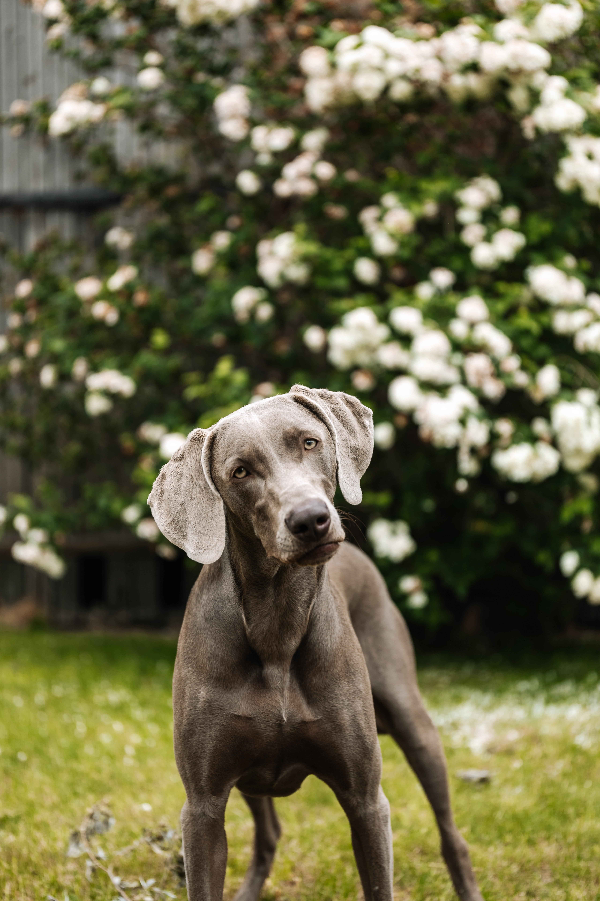

Weimaraner
Herkomst
De Weimarse Staande Hond verscheen in de vroege 19e eeuw. Deze honden behoorden aan de Weimarse adel toe, die de 'Weimarse Pointer' fokte om op groot wild te jagen. Aangenomen wordt dat de bloedhond een voorouder of familie zou kunnen zijn van de Weimarse Staande Hond. Ongeacht zijn herkomst, beperkte de adel het eigenaarschap van de Weimarse Staande Hond tot leden van de Duitse Weimarse Staande Hondenclub. De Weimarse Staande Hond werd later gefokt als een vogelhond, omdat de populatie groot wild in Duitsland afnam. Howard Knight, een Amerikaanse sporter en hondenfokker, nam in 1929 twee Weimarse Staande Honden naar de Verenigde Staten. Nog voor de erkenning van AKC, presteerde de Weimarse Staande Hond uitstekend in gehoorzaamheidsproeven, waardoor hij de interesse wekte van hondenliefhebbers. De Weimarse Staande Hond werd in 1943 erkend door de Amerikaanse Kennel Club (AKC). De Weimarse Staande Hond blinkt uit in jagen en behoort tot de sporthonden. Dit ras is een geweldige en actieve metgezel.Bron: HillsPet